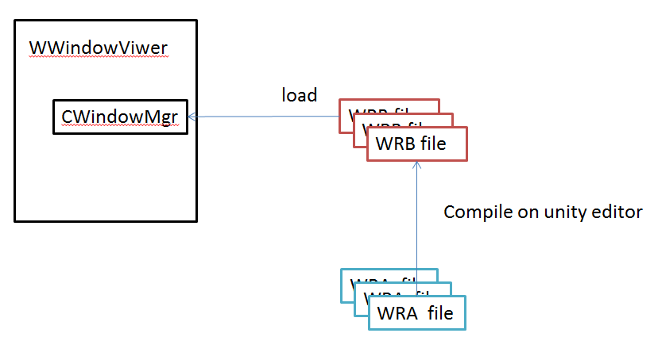
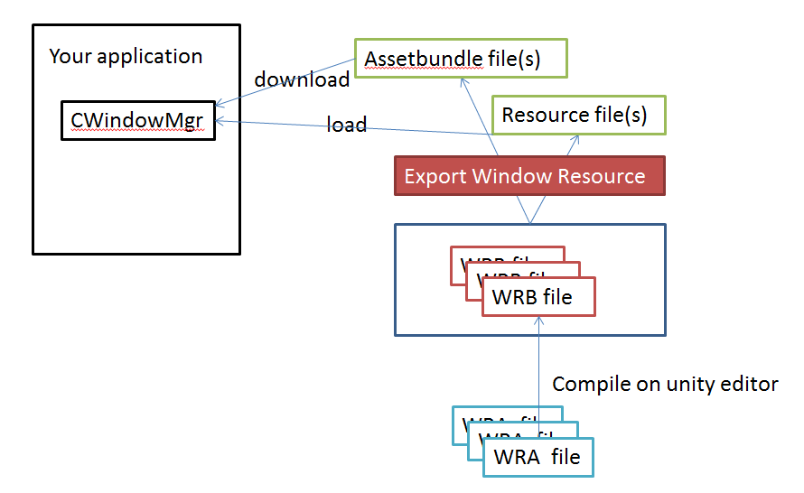

チュートリアル¶
スクリプト作成/編集方法¶
- Unity Projectを起動します。
- プロジェクト内のWindowResourceフォルダ(Assets/KsSoft/WindowResource)の直下にwraファイルを作成します。
- wraファイル上で右クリックし、Exportを選びます。
好みのエディタで編集してください。
ファイル名は、 ウィンドウ名.wra(例: CMessageWindow.wra)という形式でつけてください。 ファイルのエンコーディングは、UTF8です。
wraファイル/wrbファイル¶
wra ファイルは、Window Resource Asciiの略です。 ウィンドウのコントロールとビューを定義するためのスクリプトファイルです。
wrb ファイルは、Window Resource Binaryの略です。 wra ファイルをUnity Editor上でコンパイルに成功すると、対応したwrbファイルが生成されます。
インクルードパス¶
以下のパスにインクルードパスが、通っています。 インクルードファイルを作成する際は、ファイルをここに置いてください。
Assets/KsSoft/WindowResource/include
wraファイルをコンパイルするときにインクルードされるファイル¶
次のファイルは、wraファイルをコンパイルするときに、自動的にインクルードされます。 共通の設定や定数は、このファイルに設定されています。
Assets/KsSoft/WindowResource/include/wr.h

コンパイルされたファイルの場所¶
Unity Project/wrbというフォルダの直下に、*.wrbというファイルが生成されています。 このファイルがコンパイルされたファイルです。
ウィンドウビューワー¶
コンパイルしたウィンドウをビューワーですぐ確認できます。
また、一度コンパイルに成功したウィンドウはビューワーを起動しっ放しでも変更を確認できます。
ただし、新規で追加したウィンドウを確認したい場合は、一度ウィンドウビューワを終わらせて再起動してください。
シーン WWindowViewerを選択し、実行してください。
シーン実行中もスクリプトのコンパイルはできます。
リストが表示されるので、所定のウィンドウを選んでください。
コンパイル結果のウィンドウが表示されます。

アセットバンドル/リソースデータ化¶
WWindowViewerは、各wraファイルから、コンパイルしたwrbファイルを直接読み込んで動作します。 よって、wraファイルをコンパイルした後、即座にその変更をチェックすることができます。
しかし、実際のアプリケーションでは、各wrbファイルをアプリケーションに入れたり、読み込んだりするのは管理上煩雑になります。 そこで、本ウィンドウシステムでは、コンパイル済みのファイルを纏めて、一つ、若しくは複数のアセットバンドルやリソースファイルに出力することが可能になっています。 アプリケーションでは、その纏められたファイルを予め読み込んでおけば、いつでも全てのウィンドウを好きなタイミングでクリエイトすることが可能になります。
この纏められたファイルは、HTTP経由でダウンロードしたり、Resource経由で読み込んだりすることが可能です。
Unity上のメニューの[Tools]->[KsSoft]->[Export Window Resource]を選ぶとassetbundlesフォルダにアセットファイルが出力されます。
ファイル名は、 デフォルトで 000_000_00010.unity3d です。
読み込むファイルを変更したいときは、こちらを 参考 にしてください。
WINDOWプロパティ: RESOURCE = マルチID を用いて、出力先を変更できます。
同じ マルチID を指定したウィンドウデータは、一つのアセットとして纏めた状態で出力します。 また、アセットバンドルの情報を格納した version.unity3d も併せて更新されます。
CAssetBundleMgrは、 version.unity3d を起動時に一度読み込み、アセットバンドルが更新されているかどうかをチェックします。
WINDOWプロパティ: RESOURCE = パス を用いて、アセットデータとして出力することもできます。 同じパスを指定したウィンドウデータは、一つのアセットバンドルとして纏めた状態で出力します。

実際のゲーム内でウィンドウを扱う方法¶
ウィンドウ作成環境とアプリケーションを分ける/分けないにかかわらず同じ方法で扱えます。
CMainSystemを作成/編集する¶
public class CMainSystem : CMainSystemBase {
//==========================================================================
/*!Awake
* @brief Unity Callback
*/
new void Awake() {
Application.targetFrameRate = 60;
base.Awake();
if (m_instance != null) {
Debug.LogError("already exist CMainSystem");
return;
}
m_instance = this;
// Add Component
gameObject.AddComponent<CInput>();
gameObject.AddComponent<CSpriteFontMgr>();
gameObject.AddComponent<CTextureResourceMgr>();
gameObject.AddComponent<CWindowMgr>();
}
//==========================================================================
/*!初期化を行う.
* @brief initialize
*/
override protected void initialize() {
base.initialize();
}
//==========================================================================
/*!Instance.
@brief Instance.
*/
static private CMainSystem m_instance = null;
new public static CMainSystem Instance {
get {
return m_instance;
}
}
}
CMainSystemをゲームオブジェクトに登録¶
下記の通り、MainSystemという空のゲームオブジェクトを作成し、そこにCMainSystemをスクリプトとして追加します。

CMainSystemは、CMainSystemBase を継承するようにしてください。 CMainSystemを張り付けたゲームオブジェクトは、シーンを読み込んでも自動的に破壊されないように設定されています(DontDestroyOnLoad参照)。
最低限ウィンドウシステムを使用するために必要なスクリプトは下記の４つです。
詳しくは、こちら を参照ください。
CInput¶
入力を監視するスクリプトです。 必須です。
CSpriteFontMgr¶
フォントテクスチャ、フォントデータを管理しています。 文字を出すために必須です。
CAssetBundleMgrをゲームオブジェクトにアタッチし、アセットデータが存在するときは、フォントデータをダウンロードして使うことができます。
詳しくは、こちら を参照ください。
CTextureResourceMgr¶
アトラス化したテクスチャリソースを管理しています。 必須です。
CAssetBundleMgrをゲームオブジェクトにアタッチし、アセットデータが存在するときは、テクスチャデータをダウンロードして使うことができます。
詳しくは、こちら を参照ください。
CAssetBundleMgr¶
アセットバンドルを管理しています。
効果音、ウィンドウレイアウトデータ、テクスチャデータ、フォントデータ等全てアセットバンドル化し、読み込むことが可能です。
アセットバンドルを使用しないときは、必要ありません。
マネージャ自身はアセットバンドルの中身については関与しません。
詳しくは、こちら を参照ください。
CWindowMgr¶
ウィンドウを管理しています。 必須です。
詳しくは、こちら を参照ください。
リソースから読み込むとき¶
Resourcesフォルダに配置した、アセットを読み込みます。
一度、読み込むと、ウィンドウデータは常駐します。
CWindowMgr cWindowMgr = CWindowMgr.Instance;
cWindowMgr.load("windows");
アセットバンドルから読み込むとき¶
[Export Window Resource] を行うと次の二つのファイルが更新されます(PC,Mac & Linux Standalone環境の場合)。
- assetbundles/Windows/000_000_00010.unity3d
- assetbundles/Windows/version.unity3d
KsSoftConfig.httpserver が、正しいHTTPサーバのフォルダを指しているかを確認します。
注釈
出力するファイルIDを変更したいときは、こちらを 参考 にしてください。
ウィンドウをクリエイトする方法¶
例えば、このような名前でウィンドウを定義したとします。
#include "default_style.h"
#define WIN_WIDTH 640
$y = 160;
WINDOW(001_000_00000) {
RESOURCE = "Assets/KsSoft/Resources/windows";
PATH = NETWORKPATH;
TEX_ID = 100_000_00000;
CAPTION = 000_000_0000;
STYLE = NOTITLEBAR|NOFRAME|ANCHOR_CENTER|TOP;
SIZE = RELATIVE_SIZE(0),RELATIVE_SIZE(0);
PRIORITY = PROGRESSBAR_PRIORITY;
};
METER(ProgressTotal) {
ID = 000_001_00000;
STYLE = ANCHOR_BOTTOM;
POSITION = 0,$y;
SIZE = RELATIVE_SIZE(-128);
TEX_ID = 0,"MTRB";
COLOR = COLOR32(255.0,255.0,255.0,255.0);
SIZE1 = RELATIVE_SIZE(-128);
TEX_ID1 = 0,"MTR";
COLOR1 = COLOR32(255.0,255.0,255.0,255.0);
};
$y -=64;
METER(ProgressPart) {
ID = 000_001_00010;
STYLE = ANCHOR_BOTTOM;
SIZE = RELATIVE_SIZE(-128),32;
POSITION = 0,$y;
TEX_ID = 0,"MTRB";
COLOR = COLOR32(255.0,255.0,255.0,255.0);
SIZE1 = RELATIVE_SIZE(-128),32;
TEX_ID1 = 0,"MTR";
COLOR1 = COLOR32(255.0,255.0,255.0,255.0);
};
TEXTURE(Wait) {
ID = 000_002_00020;
STYLE = ANCHOR_RIGHTBOTTOM;
TEX_ID = 0,"LD00";
POSITION = -48,32;
};
TEXT(Message) {
ID = 000_002_00030;
STYLE = TEXT_RIGHT|ANCHOR_RIGHTTOP;
CAPTION = 000_000_00250;
FONT_KIND = "cfn20";
POSITION = -48,-32;
COLOR = 1,1,1,1;
};
そうすると、CWinAssetbundleLoadingBase.csというC#スクリプトが生成されています。 これを継承した、CWinAssetbundleLoadingクラスを作ります。
次のようにCWinAssetbundleLoadingBase.create()を使ってウィンドウを作成できます。
CWinAssetbundleLoading.create();
自動生成された、CWinAssetbundleLoadingBaseには、次のような関数が生成されています。
static public CWinAssetbundleLoading create(CWindowBase cParent = null) {
return CWindowMgr.Instance.create<CWinAssetbundleLoading>(windowId,cParent);
}
クリエイト済のウィンドウを取得する方法¶
クリエイト済のウィンドウをウィンドウマネージャ経由で find を使って取得することができます。
CWinAssetbundleLoading cLoading = CWindowMgr.Instance.find<CWinAssetbundleLoading>(CWinAssetbundleLoading.windowId);
if (cLoading != null) {
//クリエイト済のウィンドウが見つかった!
} else {
//ウィンドウは、クリエイトしていない.
}
特定のウィンドウを全面に出す方法¶
ウィンドウマネージャが持つ、bringToTopを使って、特定のウィンドウを最前面に出すことができます。
CWindowMgr.Instance.bringToTop(cWindow);
効果音について¶
効果音を鳴らすには、CWindowMgr.soundeffectを書き換えます。
soundeffectは、IWinSoundEffectというインターフェースを持つオブジェクトです。
public interface IWinSoundEffect {
void play(uint mSE);
}
付属している CSeResourceMgr と連動させる一つの例です。
CSeResourceMgr 経由で、アセットバンドル化されたSEを取得します(一つのアセットバンドルに複数のSEが入っています)。
取得した、CSeResource は、IWinSoundEffectインターフェースを持っています。 (音を実際、鳴らすには CSoundEffectMgr もCMainSystemにAddComponentしておく必要があります)。
下記の例では、052_000_00000内にウィンドウ系の効果音がパックされているという前提の実装になっています。
注釈
自作したIWinSoundEffectを持つオブジェクトと関連付けることも可能です。
public class CMainSystem : CMainSystemBase {
//==========================================================================
/*!Awake
* @brief Unity Callback
*/
new void Awake() {
base.Awake();
if (m_instance != null) {
Debug.LogError("already exist CMainSystem");
return;
}
m_instance = this;
// Add Component
gameObject.AddComponent<CInput>();
gameObject.AddComponent<CAssetBundleMgr>();
gameObject.AddComponent<CSpriteFontMgr>();
gameObject.AddComponent<CTextureResourceMgr>();
gameObject.AddComponent<CWindowMgr>();
gameObject.AddComponent<CBgmResourceMgr>();
gameObject.AddComponent<CSeResourceMgr>();
gameObject.AddComponent<CSoundEffectMgr>();
}
//==========================================================================
/*!Initialize.
* @brief initialize
*/
override protected void initialize() {
base.initialize();
//--------------------------------------------
// WindowMgr initilaize.
//--------------------------------------------
CWindowMgr cWindowMgr = CWindowMgr.Instance;
// Assign standard SEs.
cWindowMgr.soundeffect = CSeResourceMgr.Instance.reference(new MulId(52,0,0)); //2D系;
cWindowMgr.clickSE = new MulId(52,0,20);
cWindowMgr.scrollSE = new MulId(52,0,110);
}
//==========================================================================
/*!Instance.
@brief Instance.
*/
static private CMainSystem m_instance = null;
new public static CMainSystem Instance {
get {
return m_instance;
}
}
}
}
多言語対応、文字リソースをアセットバンドルにする方法¶
キャプションIDから、文字列に変換する際、CWindowMgr.captiondataに設定されたオブジェクトを通して変換されます。
captiondataは、IWinCaptionDataインターフェースです。
現在のロケールに応じて返す文字列を変えることによって多言語対応が可能になっています。
public interface IWinCaptionData {
string find(uint mCaptionId);
}
付属している CMessageDataSheetMgr と連動させるための一つの例です。
CMessageDataSheet が、IWinCaptionDataインターフェースを持っているので次のようなコードでキャプションデータを取得できます。
public class CMainSystem : CMainSystemBase {
//==========================================================================
/*!Awake
* @brief Unity Callback
*/
new void Awake() {
base.Awake();
if (m_instance != null) {
Debug.LogError("already exist CMainSystem");
return;
}
m_instance = this;
// Add Component
gameObject.AddComponent<CInput>();
gameObject.AddComponent<CAssetBundleMgr>();
gameObject.AddComponent<CSpriteFontMgr>();
gameObject.AddComponent<CTextureResourceMgr>();
gameObject.AddComponent<CWindowMgr>();
gameObject.AddComponent<CBgmResourceMgr>();
gameObject.AddComponent<CSeResourceMgr>();
gameObject.AddComponent<CSoundEffectMgr>();
addManager(new CMessageDataSheetMgr(Utility.getSystemLocale()));
}
//==========================================================================
/*!Initialize
* @brief initialize
*/
override protected void initialize() {
base.initialize();
//--------------------------------------------
// WindowMgr initialize.
//--------------------------------------------
CWindowMgr cWindowMgr = CWindowMgr.Instance;
cWindowMgr.captiondata = CMessageDataSheetMgr.Instance.find(new FiveCC("WNDW"));
// Assign standard SEs
cWindowMgr.soundeffect = CSeResourceMgr.Instance.reference(new MulId(52,0,0));;
cWindowMgr.clickSE = new MulId(52,0,20);
cWindowMgr.scrollSE = new MulId(52,0,110);
}
//==========================================================================
/*!Instance.
@brief Instance.
*/
static private CMainSystem m_instance = null;
new public static CMainSystem Instance {
get {
return m_instance;
}
}
}
}
注釈
自作したIWinCaptionDataを持つオブジェクトと関連付けることも可能です。